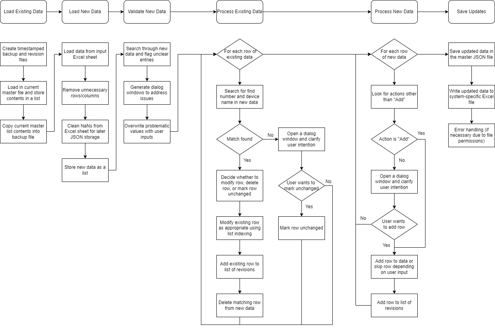
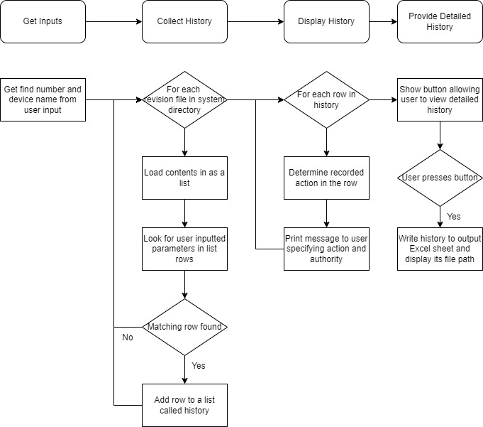

I built a desktop app using Python and various libraries (Pandas, OpenPyXL, Tkinter, NumPy, JSON) that is inspired by Git and used for engineering documentation. The back-end file management is accomplished with Python's JSON and OpenPyXL libraries, and list indexing is used for version control. Object-oriented programming is used in conjunction with Tkinter to provide a GUI. The program has three main functions:
1. Update lists of equipment, including the authority for each device change and the adjustment being made (add, modify, delete, or mark unchanged).
2. Look up and display the revision history for specific equipment.
3. Undo previous updates made to a system.
Code, the user interface, and additional functionalities are not shown due to the nature of information accessed by the program. However, the flowcharts below provide a general overview. The master update and part history processes are outlined at a high level at the top of their respective flowcharts and then broken down in detail.


The app is used by real engineers in a mission-critical environment to reduce the time required for engineering documentation.